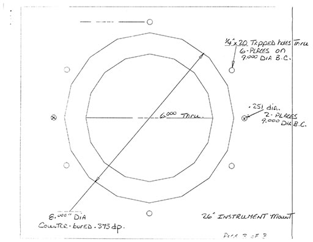

Large Format Astrophotography with the McCormick Telescope
When I first began this project, I spent several weeks just researching whether it had been done, whether it was possible, and what might be the best way to do it. I was able to find surprisingly little information, considering that I am effectively recreating the method by which astronomy was done for over a century. To my knowledge, there are only a handful of people in the world still doing large format film astrophotography, and all of the world's large telescopes are now either equipped with smaller digital sensors or relegated to outreach use with eyepieces. I find this to be very unfortunate, but I hope that in the future, other people like myself will find themselves with similar opportunities, and the art of large format astrophotography will be kept alive. I am writing this article for the sake of those people.
Table of Contents
1. History and Theory
The McCormick Observatory in Charlottesville, Virginia houses a 26 inch refracting telescope built by Alvan Clark & Sons. This instrument has accumulated quite a bit of history during its lifetime. When it was new, in 1874, it was the largest telescope in the world, sharing the title with its nearly-identical sibling at the US Naval Observatory. In 1877, when the telescope was still in possession of Alvan Clarke, it was used to verify the existence of the moons of mars, which had been discovered the previous night. After it was finally installed in 1884, it became part of a combined effort to compile a comprehensive star catalogue. Each participating observatory was a assigned a band of sky, which was to be painstakingly mapped by hand. However, the advent of photography rendered these techniques obsolete. The McCormick observatory holds the distinction of being the last observatory to complete its portion of the catalogue before the project was discontinued. The telescope was soon updated to accept 5x7 inch photographic plates; over the next hundred years, many thousands of plates would be exposed. They now reside in an archive beneath the observatory.
Some time after the construction of the nearby Fan Mountain Observatory, the McCormick Telescope was officially retired from scientific use. Today it is used for outreach and by astronomy classes at the University of Virginia. At some point, the original tailpiece was removed and a modern replacement was installed. Unfortunately, the new tailpiece restricts the aperture to 2 inches, permitting only the use of eyepieces and small-format cameras. With the tailpiece removed, the telescope's original five-inch image circle is available, but the new mounting system does not permit the original large format camera to be used.
This is where my project begins. I find the process of traditional large format astrophotography to be fascinating: a perfect union of science and artistry. Moreover, what better way is there to bring close the wonders of the cosmos than via large format photography? Eyepieces are fiddly, dim, and highly restrictive. Modern digital cameras are extremely expensive and have very small sensor areas, and even if large-scale images can be collected via stitching of multiple frames, there are no good methods to display digital images: large, high-quality displays are rare, and no displays can approach the resolution of 4x5 inch film.
Oddly, although hundred of thousands of photographic plates have been exposed in the last century at the McCormick telescope and others like it, I was not able to find any examples of digitized plates online. I later learned of a project underway at Harvard to digitize its extensive plate collection, but even this seems to have produced very few publicly available, high quality scans. Regardless, my intention is not to produce scientifically useful plates, but art objects, taking advantage of advances in photographic technique and technology which were not available during the heyday of large-format telescopes.
Specifically, my goal is to capture high resolution 4x5 transparencies of a variety of celestial objects and project them optically onto a large surface, such that the scenes fill the observer's field of view while retaining enough resolution that grain is undetectable at close range. In doing so, I hope to create an engulfing, perhaps even numinous experience. Only a handful of human beings have ever had a view of the sky unmediated by atmosphere, and of those only twenty four experienced a celestial body — the moon — filling the sky above them. For the rest of us, who will likely never follow them, I hope to created the closest simulacrum I can manage to actually being among the stars.
I would like to thank the University of Virginia astronomy department, and Dr. Edward Murphy in particular, for making all of this possible. I was not an astronomy student, yet they taught me to use their telescope, and permitted me to spend long nights at the observatory alone. They also taught me the history of the telescope and of the science of astronomy, and were immensely helpful on many other occasions; all this under no obligation.
2. Mechanics

Actually achieving what I described above turned out to be far more complicated than I had anticipated, grand though I knew the plan to be beforehand. I set as my initial goal to photograph the moon, which is a much easier target than anything else in the sky, due to its brightness and the fact that its surface is covered with fine detail. The McCormick telescope turns out to be almost perfect for this purpose.
The Telescope's specifications are these: it has a focal length of 391 inches, or roughly 9930mm; it has an entrance pupil 26 inches in diameter, thus the effective focal ratio is roughly f/15 (this value is officially listed as f/14.86 - I have yet to discover the source of the discrepancy); and the image area is 5.1 inches in diameter. On 4x5 inch film, a 391 inch lens has an angle of view of just over 35 arcminutes (0.586°) in the narrow direction, and 44 arcminutes (0.733°) in the wide direction. The moon has an angular size between 29 and 34 arcminutes, depending on when it is observed. Thus, the moon fits almost perfectly into a 4x5 inch slide. Apart from the moon, this relatively wide field of view makes the McCormick telescope ideal for photographing large astronomical objects, such as the Orion or Triffid Nebulae, or the Andromeda, Triangulum, or Whirlpool galaxies.
The McCormick telescope uses a custom-designed instrument mount with a six-inch aperture (slightly larger than the nominal image area of the telescope), to which my camera must attach. Building a camera from whole cloth, however, could prove to be difficult, so it's best to adapt an existing design. I purchased a well-worn Calumet monorail camera to serve as the basis. This is not as rigid as a solid camera body, but it does provide the advantage of a rotating back and a fine focus adjustment system (although the telescope is capable of focusing the entire tailpiece, that adjustment is somewhat coarser and more difficult to use). I fabricated a new mounting interface that connects to the monorail via what was once the front standard.

The shuttering system poses an additional problem. Very, very few lenses have ever required such a large shutter as this one, and most of the largest ones (including many aerial camera lenses) made use of focal plane shutters for the sake of simplicity. A focal plane shutter is not an option for me, as I needed to reduce vibration at the film plane as much as possible. The first several revisions of the camera design used a simple guillotine shutter, mounted behind the front standard. However, this would have been tricky to fabricate, difficult to control, and would have remained prone to vibration.
Fortunately, my local camera shop happened to have this ancient Packard leaf shutter in the back. The Packard shutter company has apparently been in business since some time in the 1890s, and you can buy still buy a brand new Packard Ideal Shutter from them today, in sizes up to eight inches. The shutter is actuated via a pneumatic cylinder, and can be used for manually-timed exposures, or in instantaneous mode with a fixed speed of 1/25th of a second.
The shutter that I bought has an opening of only four and a half inches; this is somewhat less than the five inch image circle of the telescope, unfortunately. However, it cost less than one tenth what a new five or six inch shutter would cost, so the trade-off is reasonable.
Finally, the completed telescope camera. The front standard has been replaced with a new mounting interface, and the tripod mount removed. The shutter is attached between the interface and an aluminum bracket, to which the bellows are connected. My father helped me to fabricate the various pieces in his workshop. The entire assembly is roughly the same weight as the original Calumet camera.
I have replaced the camera's original ground glass with a custom made Ultrafine screen from Steve Hopf. I explained my use case to him, and he was nice enough to custom-grind a screen with extra resolving power (at the expense of some brightness, so it seems). This screen is perfect for focusing on the moon or planets, though for dim objects, a brighter screen may be better.

Careful measurement paid off, and the telescope camera fit on my first attempt. It is light enough that it is only necessary to use two of the six mounting holes. Unfortunately, the monorail is so long that it can interfere with the observer's platform (a moving structure that can be adjusted to place the observer directly behind the tail of the telescope, even when the telescope is parallel to the ground), so some care is needed when the camera is attached.
As expected, the image area is just enough to capture a full moon in its entirety.
One persistent bugbear of deep-sky imaging is tracking. The McCormick telescope is, as I have said, still driven by its original hundred and thirty year old gearing. In a century of use, the gearing has developed some eccentricities (and it's doubtful that it was ever perfect). Miraculously, after 130 years of frequent use, and in spite of the fact that the design predates computers and the telescope weighs thousands of pounds, the telescope drifts not more than a few arcminutes over the course of a two hour observation.
Nonetheless, even a few arcseconds of drift are noticeable at this level of magnification, so a guidance system will be necessary if I am to capture any deep-sky exposures successfully. I was recently gifted an autoguider, the SBIG ST-4. Unfortunately, the telescope's electronic guidance system lacks an autoguider input, so instead I am in the process of designing a motorized X/Y stage, to serve as an interposed between the telescope and the camera. To the camera I have added a moveable off-axis feed, which peers through the half-inch gap between the telescope's image area and the camera's. As the autoguiding system is incomplete, I have been using this off axis system for manual guidance with a ground glass and cross-hair, but my results have been poor.
3. Phenomenology
Now, finally, I can say something about how it is to operate the telescope. The McCormick telescope, and predates electrification. Originally, it was driven by a beautiful clockwork governor, housed inside the telescope pier, with the power being supplied by slowly falling weights, much like a grandfather clock. This was sufficient to move thousands of pounds of glass and steel across the sky with exquisite precision and smoothness. The drive system has been modernized at several points during the history of the telescope. The original mechanical governor is now a museum piece, and the telescope is currently driven by a set of small, computer controlled electric motors, using the original, 130 year old gearing.
In spite of the modern computer controls, operating the telescope remains a phenomenally organic, mechanical experience. The electric motors provide only fine control, and very gross control along the RA axis, so the telescope must still be unlocked and pointed manually, using a spotting scope roughly as large as I am, as has been done for the last hundred years. The inertia of the telescope is immense; especially on cold nights, it requires my full weight leaning into the tailpiece, arms at full extension, to shift it into position. The observatory doors are still controlled by ropes and pulleys; they squeak and stick, and close with a dull thud. In the winter, they sometimes admit small quantities of snow into dome. Every two hours, the gearing — originally designed around the constraints of hanging weights — runs out of play, and must be rewound.
The camera itself must be focused afresh each night on the ground glass, using a loupe. My loupe is a tiny, folding, brass model, originally made in Germany for inspecting threadcounts, sometime even before the telescope was constructed. Even on still, clear nights, tiny currents in the air, invisible to the naked eye, cause focusing to take several minutes. Dim objects cannot be focused at all — instead, the telescope must be focused on something brighter, then moved into position; this technique is familiar to the users of rangefinder cameras, who have been employing it for ages on a much smaller scale. With a target chosen and aligned, the shutter must be actuated by hand, or pneumatically, by inserting the ancient rubber tube into the mouth. With practice, times approaching 1/30th of a second can be achieved. Excessive force, however, will cause the camera to vibrate.
I have had few experiences quite so magical as sitting beneath the telescope, with the camera installed and the shutter open. There is some strange quality to ground glass; it lends a hyper-reality to the image not seen in photographs. On the glass, you can count (inaccurately) the rings of Saturn, watch the shadows of the Galilean moons pass over the surface of Jupiter, and trace the outline of the Orion Nebula. When the air is turbulent, the surface of the moon will dance (which makes for poor photography, but is fantastic to watch). The dynamic range of your eyes is undiminished, and on a clear night, you can make out the dark part of the moon — not truly dark, but illuminated by earthshine. The experience is seems somehow to be less intermediated than when using an eyepiece. Distant phenomena are not so much magnified as brought into the room with you.
Because the moon is a retroreflector, its brightness per unit area actually increases as the moon approaches full. Under a full moon, the biggest problem is overexposure. Even at ISO 64, it is difficult to actuate the shutter fast enough to achieve a neutral image. Using especially low-sensitivity film mitigates this problem, but such film is typically expensive, expired, and difficult to find. Anyone who would attempt to replicate this project may want to consider investing in a large ND filter.
Attaining sharp images of the moon or planets requires a phenomenally still sky. Such skies occur only a handful of times each year, and I have not yet been able to take advantage of one. The unfortunate result is that none of the images I have captured properly represent the resolution of which the telescope is capable.
4. Chemistry
Dim objects present a different problem. At left is a photo of M42, the brightest nebula in the sky, taken on ordinary film at ISO3200. Even this, the brightest non-planetary target, suffers noticeably from the effects of reciprocity failure, an inherent property of film whereby exposure does not increase linearly with time, past a certain point. Furthermore, it's clear by comparison to other photos of the nebula that the ordinary HP5 film stock I used has a much lower sensitivity to the deep red band than is necessary to produce a good image. Specifically it is insensitive to H-Alpha, or light with a wavelength of 656.28 nanometers, which is emitted by hydrogen in the process of ionization, as found in emission nebulae and stellar atmospheres. Once upon a time, it was possible to buy panchromatic film, sensitive to all visible wavelengths, including H-Alpha. Among these, Kodak Technical Pan was king, and it was in common use among astronomers for many years, but the last batch was manufactured in the early 2000s. Nonetheless, I have managed to buy a couple of boxes, safely frozen against expiry. The closest modern equivalent is probably Rollei RPX25, which claims panchromaticity, but I have had little luck with it.
There are long histories of techniques for curing reciprocity failure, most of which are no longer practiced, and many of which are effectively lost to time. The best known and most effective was the process of gas hypersensitization; the film is outgassed in a high vacuum, and then baked in an atmosphere of hydrogen and nitrogen (or, for the truly brave astronomer, pure hydrogen). It is this process that I have attempted to replicate. I managed to acquire an old gas-hypering tank from an observatory in California. With new seals and valves, it holds a 29-inch vacuum or one atmosphere over ambient pressure for over a week. To this, I added an integrated heater, using nichrome wire and a very cheap regulator. For my working gas, I use Forming Gas (5% hydrogen, 95% nitrogen), which is not explosive, and therefore much less risky than pure hydrogen. It was once commonly available in small quantities from welding suppliers, but is now considerably more difficult to acquire. I was able to buy a small tank from Grainger without too much hassle.
Hypersensitization Procedure
My current formula for gas hypering is derived from the one given by Wallis & Provin and the one used by Rick Thurmond.- Insert film into tank in complete darkness.
- Using a two stage vacuum pump, evacuate the tank to -29 inHg or better.
- For 24 hours, keep film at a vacuum. Every few hours, run the pump again.
- Without introducing any air, flood the tank with forming gas to +3 psi. Introduction of air can be avoided by attaching the gas line with the gas already flowing, and the tank's valves shut. The exact pressure is not critical — the only criterion is that it must be slightly over ambient.
- Raise the temperature of the tank to 50° Celsius.
- Let stand for 48 hours, making sure pressure stays above ambient and temperature is steady. Add forming gas as necessary. Allow tank to cool to ambient afterward.
- Use immediately, or, for storage, do the following:
- Without introducing any air or releasing the tank's contents, pressurize the tank with either nitrogen or argon to +15-20 psi. As before, attach gas lines with the gas flowing. Next, carefully release pressure until it is just above ambient, but do not allow pressure to equalize with the ambient air. Repeat this six to eight times. This flushing process dilutes the hydrogen in the tank until the quantity is insignificant.
- Store the entire tank frozen. Do not open until ready to use.
I have made two attempts at hypersensitized astrophotography thus far. Both resulted in highly flawed, but promising results. In both cases, the tank leaked somewhat during storage, causing the film to lose its hypersensitization across part of the film surface. Nonetheless, I take these as evidence that the process works and is merely in need of process control. My very first hypersensitized photograph, a shot of the Lagoon Nebula (M8), is shown at left. Although the center of the image has lost its sensitivity due to being curled over in the tank, a few of the nebula's distinct features are visible around the periphery.
My second attempt to capture the Orion Nebula. This image was taken with the assistance of UVa's astrophotography class of fall 2016. Compare with the unhypered version, above. Note that both images are blurry due to significant tracking and focus errors. Additionally, it was not known until after they were developed how gas-hypered tech pan would react to the particular development process employed, as the combination had never been tried before. Now that the correct parameters are known, future attempts should have significantly more dyamic range.
There are a multitude of development methods available, with varying degrees of suitability. Because I intend to project some of my photos optically, I have chosen to use DR5, a lab with its own custom process for developing monochrome film as positives; to my knowledge, it is the only such process in the world. Photos developed this way have very little grain and can often be pushed or pulled several stops beyond the box speed with little or no change in image quality. Additionally, they can develop Kodak Technical pan, with the quality of the resulting transparently rivaling that produced by the long-since-defunct Kodak Technidol.
It should be said that the folks who run DR5 are phenomenally helpful. They have been willing to answer my chemical and photographic questions at length on a number of occasions, have made several excellent recommendations, and have even offered to attempt development of glass plates, should I be able to shoot any. When I sent them my first few sheets of hypersensitized film, they were willing to run an experiment to determine how it should be devloped. Although it can be pushed as far as ISO200, it seems that well-exposed hypersensitized tech pan should be developed for the equivalent of ISO25-40.
5. Optics
The plan was to project my slides optically, but this, too, turns out not to be a simple task. Large format projectors do exist, but they're typically designed for advertising of theater backdrops; as such they're remarkably expensive. They are typically illuminated by xenon arc lamps, which are fiddly and dangerous, and require a colossal amount of power. Few if any 4x5 inch projectors have ever been built for photographic applications, and none are commercially available, so far as I can tell. As a result, it was necessary to design and build my own.
A projector is not a terribly complicated device. In essence, it works like a camera in reverse, and to serve as the body of my projector I will be using a Pacemaker Speed Graphic, equipped with a Kodak Aero-Ektar 7 inch f/2.5 aerial surveilance lens. The Aero-Ektar is one of the fastest mass production large-format lenses in history. It was originally designed in the 1940s, and was used by the military during the second world war. It makes a fantastic portrait lens, when mounted to a speed graphic. The advantage of such a fast lens for use in projection is the brightness of the image it will produce. The faster the lens, the greater the portion of the light from the lamp that will reach the projection surface.
With the body of the projector accounted for, what remains is a lamp. An ordinary digital office projector produces something like three to five thousand lumens, and typically uses a much faster lens than I have. To project at the size and brightness I want, I need a significantly brighter light source than that. Fortunately, metal halide bulbs that produce over one hundred thousand lumens are available for industrial applications. Although a metal halide bulb requires a special power supply and cooling, it it still much simpler and less dangerous than the xenon arc lamps typically used in other large format projectors. Metal halide also carries the benefit of having a relatively good CRI, an appropriate color temperature, and relatively long life. I am using a Sylvania 64469.
A bulb on its own won't be enough, though. I need to be able to direct the light toward the film plane, which means I need some sort of lamphouse. Moreover, it's actually against building codes to use most metal halide bulbs without enclosures, because when they fail, they tend to fail in an explosion of superheated quartz shrapnel. My lamphouse is based on an Omega large format microfiche enlarger, which is large enough to contain the BT37-sized bulb with perhaps a quarter inch of diameter to spare. The use of an enlarger has an additional advantage in that it comes with a condenser lens, which will improve the efficiency and evenness of the lamphouse considerably.
Transforming the enlarger head into a functional lamphouse requires that a diffuser plate (i.e. a piece of ground glass) be installed in front of the lens, and that the original bulb mounting be replaced with a reflector and a mogul socket to hold the new bulb. This done, the only problem remaining is to dissipate the bulb's immense heat.
The first time I assembled and tested the lamphouse, I did so without any cooling at all (knowing beforehand that it would definitely have to be added before the device could actually be used). The heat from the lamp was so intense, it actually boiled the paint on the front part of the enclosure. Subsequently, I stripped what paint remained. To remove as much heat as possible from the housing, I wrapped a length of copper tubing tightly around the waist of the lamphouse. Ice water is circulated continuously through this tube by a fishtank pump while the light is in operation. In addition, I added a powerful centrifugal blower to a port under the tail end, and an exit vent diametrically opposite (protected from light spill by internal baffles); this system keeps the air inside the enclosure continuously circulating. Even with these two modifications, however, the front portion of the housing easily reaches 200°C during operation.

The complete projection system is as follows: the focus screen is removed from the speed graphic, which is mounted on a tripod. The lamphouse is mounted on a separate tripod immediately behind it, such that the greatest possible portion of its light falls on the back of the camera. For a film holder, I initially used two pieces of glass with the transparency pressed between them. The heat caused them to crack, however, so I was forced to replace them with a metal film holder taken from a large format enlarger. Unfortunately, this permits the film to warp significantly, which compromises the sharpness of the projected image. If I continue to use this projection system, it would be worthwhile to make a new film holder out of borosilicate.
In practice, the lamphouse is capable of melting roughly twenty pounds of ice per hour. In six hours of use, the once-black powder coat on the inside of lens holder bleached to silver. Similarly, the slides show signs of bleaching after approximately fifteen minutes of projection (impressive, considering the hardiness of silver-based monochrome slides). It may be worthwhile to invest in a high-power LED array in the future. Although they are not as bright, it is likely that less light will be lost to heating the walls of the lamphouse.
Carefully place a few chairs such that viewers can't help but sit in the way of the projection.
6. Five Years Later...
In the five years since I originally published this writeup, a few things have happened. I collaborated with Kevin Jerome Everson to shoot a film, Rough and Unequal, through the McCormick Telescope. I completed the motorized X/Y stage mentioned above, which is now incorporated into a second-generation camera that shares only a few parts with the original. The observatory was temporarily shut down for the telescope's first full cleaning in decades, and then was shut down again not long after due to the COVID-19 pandemic. I moved far away from Charlottesville, and nowadays visit only occasionally. Unfortunately, this has meant that I have not yet had a chance to use my new tracking camera. I have, however, done a test-fitting, and with the camera complete, all the pieces are now in place to image dimmer objects. I hope to have an opportunity when the pandemic ends, but only time will tell.